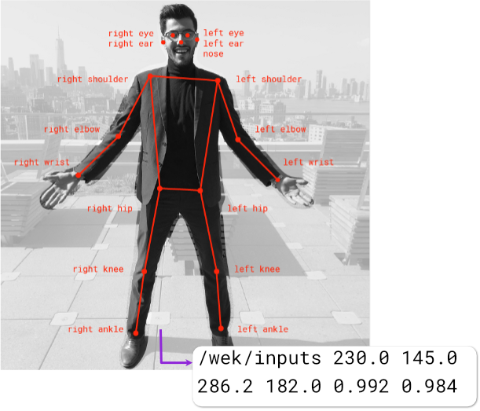

Teachable Machine for Wekinator
Tools for using Google's
Teachable Machine
with
Wekinator
.
Teachable Machine Pose
Use a Pose classifier with Wekinator.

Track Pose
Choose what pose information (eyes, nose, wrists, etc...) to send to Wekinator.
Teachable Machine Image
Use an Image classifier with Wekinator.
Teachable Machine Audio
Use a Teachable Machine Audio classifier with Wekinator.
Track Palm
Send the location of your palm from the webcam to Wekinator.
Track Hand
Choose what hand position information to send from the webcam to Wekinator.
Track Face
Send face tracking points from webcam to Wekinator.